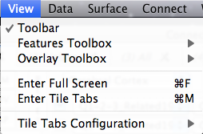

View Menu
The View Menu
controls display options for the Workbench Window
(Toolbar, Toolboxes, Tabs):
- Toolbar turns on/off the toolbar
above the Viewing Area. If there is a checkmark
to the left the Toolbar is currently on.
- Features Toolbox >
Placement options for the Features Toolbox:
Attach to Right/Detach/Hide
- Overlay Toolbox > Placement
options for the Overlay Toolbox: Attach to
Bottom/Attach to Left/Detach/Hide
- Enter Full Screen expands the
Viewing Area to take up the entire screen. All Toolbars,
Toolboxes, etc. are hidden. The Esc key exits Full
Screen mode. The shortcut for
Enter Full Screen is Command/Ctrl
+ F.
- Enter Tile Tabs switches the
Viewing Area from displaying one Viewing Tab at a time to a
configuration that can display multiple Viewing Tabs at once.
Viewing Tabs are shown in Tile Tabs left to right and in one
or more rows in the order of their arrangement in normal
viewing configuration. See Viewing Tabs to
learn how to change the order of the tabs. The Esc key
exits Tile Tabs. The
shortcut for Enter Tile Tabs is Command/Ctrl
+ M.
- Tile Tabs Configuration
> Custom and standard display configuration options
for Tile Tabs viewing. The default is to display all of the
Viewing Tabs open in that Workbench Window. Full details on
these options and how to setup custom Tile Tabs views in Tile
Tabs Configuration.
